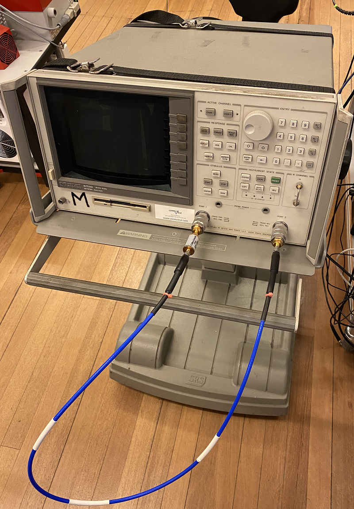
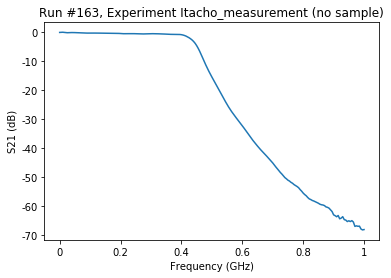

This page was generated from
docs/examples/driver_examples/Qcodes example with HP8753D.ipynb.
Interactive online version:
 .
.
QCoDeS Example with HP8753D
This is the example notebook illustrating how to use the QCoDeS driver for the HP 8753D Network Analyzer.
Throughout the notebook, we assume that a Mini-Circuits SLP-450+ Low Pass filter is connected as the DUT. The test setup is as the following picture:

Required imports
[1]:
import time
from qcodes.dataset import do0d, do1d
from qcodes.instrument_drivers.HP import HP8753D
Connecting to the instrument and running the testHP8753D
[2]:
vna = HP8753D('vna', 'GPIB0::15::INSTR')
Connected to: HEWLETT PACKARD 8753D (serial:0, firmware:6.14) in 0.22s
For the sake of this tutorial, we reset the instrument
[3]:
vna.reset()
Let’s look at the current snapshot of the instrument:
[4]:
vna.print_readable_snapshot(update=True)
vna:
parameter value
--------------------------------------------------------------------------------
IDN : {'vendor': 'HEWLETT PACKARD', 'model': '8753D', 'serial'...
averaging : OFF
display_format : Log mag
display_reference : 0 (dB)
display_scale : 10 (dB)
number_of_averages : 16
output_power : 0 (dBm)
s_parameter : S11
start_freq : 30000 (Hz)
stop_freq : 6e+09 (Hz)
sweep_time : 0.175 (s)
timeout : 10 (s)
trace : Not available
trace_points : 201
We setup the test such as the low-pass filter is connecting Port 1 to Port2. Let’s setup the trace of S21 with 10 averages with a frequency range from 100 kHz to 1 GHz on a linear scale. Then, the instrument settings are as below:
[5]:
vna.display_format('Lin mag')
vna.s_parameter('S21')
vna.start_freq(100e3)
vna.stop_freq(1e9)
# and let's adjust the y-scale to fit
vna.display_scale(0.12)
vna.display_reference(-0.1)
# and finally enable averaging
vna.averaging('ON')
vna.number_of_averages(10)
Single trace measurement
Now we aquire a single trace. Before each aqcuisition, we must run prepare_trace for the instrument trace:
[6]:
vna.trace.prepare_trace()
do0d(vna.trace)
Starting experimental run with id: 163.
[6]:
(results #163@C:\Users\QCoDeS_Public\experiments.db
--------------------------------------------------
vna_Frequency - array
vna_trace - array,
[<matplotlib.axes._subplots.AxesSubplot at 0x1c7faee5b08>],
[None])

Acquiring traces while sweeping
Now we will vary the output power and acquire a trace for each power to examine how applying more power reduces the measurement noise. We have to ensure that the vna finishes averaging before moving to the next power step. Therefore, we setup a function to do this average and pass it to our measurement setup (note that this function can be implemented in several different ways)
[7]:
n_avgs = 10
vna.number_of_averages(n_avgs)
def run_sweeper():
vna.run_N_times(n_avgs)
We prepare our trace and run the sweep and time it:
[8]:
vna.trace.prepare_trace()
t1 = time.time()
do1d(vna.output_power, -84, -40, 20, 0.1, run_sweeper,vna.trace)
t2 = time.time()
t2-t1
Starting experimental run with id: 164.
[8]:
72.79213905334473
n_avgs can be changed between 1 and 999 (the higher average, more detailed result and longer time to finish)
[9]:
vna.close()